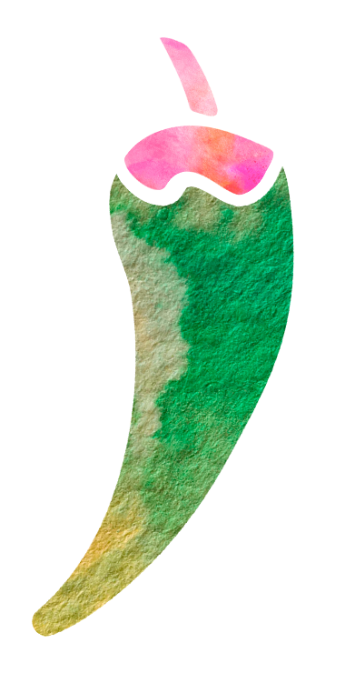

En algún rincón del México profundo, donde los aromas de maíz, cacao y chiles secos aún flotan en el aire como en tiempos antiguos, vive Xolín, un xoloitzcuintle ancestral, guardián de sabores.
Según las antiguas leyendas, Xolín fue guía hacia el Mictlán, el inframundo. Pero hoy su misión es diferente: llevarnos en un viaje al corazón de la gastronomía mexicana, revelando cómo cada platillo guarda historias y significados
A continuacion te presentaremos un banquete de cinco tiempos, donde Xolín nos conducirá por la historia de la gastronomía mexicana.

Comenzaremos con el México Prehispánico, explorando las raíces de la cocina ancestral
Luego, pasaremos al mestizaje culinario en la Conquista y el Virreinato, donde la fusión de culturas dio lugar a nuevos sabores.
Seguiremos con la influencia europea, con platillos que mezclan técnicas y tradiciones.
Después, nos adentraremos en la Revolución Mexicana, celebrando los sabores del pueblo
Finalmente, el México Contemporáneo y su creatividad gastronómica, que nos conecta con el mundo


Bienvenido al 'Aperitivo', un primer bocado de historia servido con los ingredientes que dieron forma al México prehispánico. Este platillo está preparado con maíz, el alma de nuestra tierra; cacao, el regalo divino de los dioses; chile, el fuego que enciende nuestra cultura; frijol, el eterno compañero, y calabaza, la joya versátil de la cocina ancestral.
Cada ingrediente, como un sabor único en el plato, te invita a explorar la conexión sagrada entre el hombre y la tierra. Las culturas prehispánicas como la Mexica, Maya y Zapoteca, desarrollaron técnicas culinarias sofisticadas que transformaron estos ingredientes en pilares de una gastronomía milenaria. ¡Disfruta este viaje al origen!
El maíz no solo era alimento, era vida misma. Para los Mayas, el hombre fue creado del maíz, según el Popol Vuh. El secreto está en la cal. La nixtamalización transforma el maíz en nutrición.
años de cultivo
de la dieta mesoamericana
El frijol era el fiel compañero del maíz, juntos formaban la base nutricional perfecta conocida como la tríada mesoamericana. Considerado un alimento fundamental en la dieta prehispánica, aportaba las proteínas necesarias para complementar los carbohidratos del maíz.
de las proteínas diarias
años de cultivo
Ah, el chile, un fuego que alimenta el alma. Este tesoro ardiente era más que un condimento: era medicina, era ritual, era vida. Los mexicas lo utilizaban en casi todos sus platillos, y su cultivo era tan importante como el del maíz. Su sabor distintivo marcó para siempre la identidad de la cocina mexicana.
variedades de chile
consumo diario por persona
La calabaza era un ingrediente versátil y nutritivo en la dieta prehispánica. Se usaba para hacer atoles, tamales y guisos. Sus semillas tostadas (pepitas) eran un aperitivo popular y una importante fuente de grasas saludables. En la milpa, la calabaza se cultivaba junto al maíz y frijol, creando un sistema agrícola sustentable que combinaba estos tres alimentos básicos.
de almacenes aztecas
especies nativas
El cacao era literalmente el "alimento de los dioses" (Theobroma cacao). Reservado para ceremonias y la élite, se consumía como una bebida espumosa y amarga, muy diferente del chocolate actual. Los mayas y aztecas lo consideraban sagrado, y sus semillas fungían como moneda en toda Mesoamérica. Su valor era tan alto que estaba bajo protección militar durante su comercio.
semillas por capa
semillas por esclavo
En el México prehispánico, la cocina se enriquecía con una amplia variedad de ingredientes y técnicas:
especialidades regionales
variedades de tamales
tipos de sopas
Los Mexicas, Mayas y Purépechas desarrollaron un entendimiento profundo de su entorno, aprovechando cada recurso disponible con técnicas como la nixtamalización, que mejoraba la calidad del maíz y permitía la creación de tamales y tortillas.
Nuestro viaje continúa en El Entremés, donde la llegada de los españoles transformó nuestra cocina. Ingredientes como el trigo y la carne de cerdo dieron origen a una gastronomía mestiza. ¿Listo para descubrirlo?
Próximamente
Próximamente
Próximamente
Próximamente